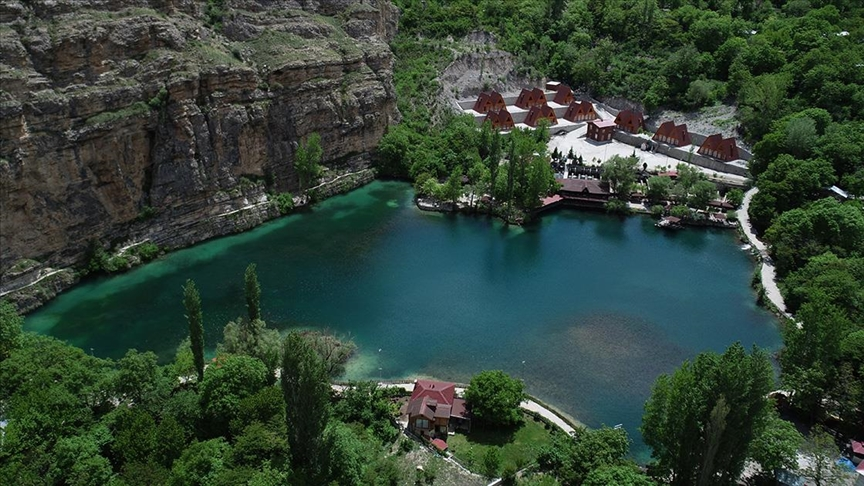
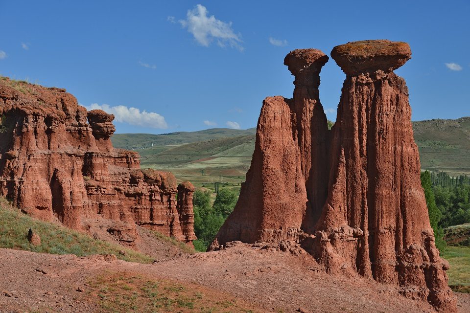

Tortum Şelalesi

Yedigöller

Narman Peri Bacaları

Öşk-Vank Kilisesi
Tortum Şelalesi, 1700'lü yılların ortalarında bugünkü Balıklı Köyü batısında bulunan bir dağın heyelan sonucu Tortum Çayı'nın önünü kapatmasıyla oluşmuş bir şelaledir. Tortum Şelalesi, Tortum gölü'nün Tev Vadisi ile gölün kuzey ucu arasındaki heyelan kütlesini aşarak dökülmesiyle oluşmaktadır. Tortum şelalesi'nin döküldüğü akar yatağa yakın dirençli kireç taşı katmanları üzerinden geçmektedir. 22 metrelik genişlikten ve 48 metre yükseklikten düşmektedir. Düşen sular, üstte gökkuşağı, altta koca bir dev kazanı meydana getirmektedir. Ayrıca bu göl bir doğal anıttır.
Tortum Şelalesi'nin akan sularından oluşan irili ufaklı göller, Artvin yolu üzerinde Ulubağ Köyü'nde yeşillikler arasında kaybolan eşsiz manzaralarıyla görenleri büyülüyor. Erzurum'un ayrıca İspir İlçesi'nde de Yedigöller mevcuttur ancak orası buzul bir göldür ve Kaçkar Dağları'nın yüksek kesimlerinde irili ufaklı 7 adet gölden oluşmaktadır. Uzundere Yedigöller, Erzurum şehir merkezine yaklaşık 110 km ve Uzundere ilçe merkezine 20 km mesafededir. Göller Tortum Şelalesi'nin Kuzeybatısında Artvin yolu üzerinde, şelaleden sonra yaklaşık 10 km mesafededir.
Narman Peribacaları’nın meydana gelmesinde rüzgâr ve su erozyonunun milyonlarca yıl toprakları aşındırma özelliği büyük rol oynamıştır. İnsan faktörlerince değiştirilmeden tamamen doğa olayları sonucu oluşarak günümüze kadar şimdiki halini alarak gelmiştir. Narman Peribacaları'nın tanıtımında Atatürk Üniversitesi'nin düzenli bir şekilde gerçekleştirdiği şenlik ve sergi çalışmalarının önemli katkısı olmuştur.İç turizme kazandırılması amacıyla tanıtım yönünde son yıllarda büyük atılımlar yapılmış olan Narman Peribacaları Türkiye'nin tüm bölgelerinden ziyaretçileri bölgeye çekmektedir.
Öşvank Kilisesi, Uzundere İlçesi Çamlıyamaç Köyü'ndedir. Renkli taş bezemeleri ve kabartma figurleri ile ünlüdür. Öşvank Kilisesi güney haç kolundaki giriş alnında bulunan kitabeye göre Gürcü Bağratlı Hanedanlığı zamanında 3'üncü Adernese'nin oğlu Magistras Bağrat tarafından 963-973 yılları arasında yapılmıştır. Mimarisi Öşk'lü Grigor'a ait olan kilise, Vaftizci Yahya'ya adanmış yapının büyük kubbesi Bizans İmparatorları 2'nci Basileios ve 7'nci Constantin tarafından 1022-1028 yılları arasında onarılmıştır.